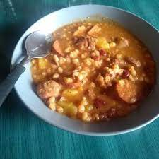

Locro

INGREDIENTES
Una tasa de porotos blancos
Una tasa de maíz blanco partido
1 chorizo colorado
Carne de cerdo (como patitas, pechito y falda)
Calabaza (cubos y rallada)
Verduras (como morrón rojo, puerro y zanahoria)
Estos son los ingredientes para cocinar la obra maestra culinaria Argentina, que se utiliza para festejar el 25 de mayo
Preparación de ingredientes:
Corta las carnes en trozos pequeños, las verduras en rodajas finitas y la calabaza en cubo
y parte rallada. Remoja los porotos y el maíz desde la noche anterior.
Cocción: Cocina las carnes, los porotos y el maíz en una olla con agua hasta que estén tiernos.
Agrega la calabaza y las verduras: Incorpora la calabaza rallada y las verduras a la olla.
Condimenta: Agrega sal, pimienta y comino al gusto.
Cocina a fuego lento: Deja que todo se cocine a fuego lento hasta que los sabores se mezclen y el locro tenga una
consistencia espesa.
Sirve caliente: Acompaña con pan o empanadas.
NO OLVIDAR LAVAR LAS VERDURAS
Las verduras no son limpiadas previamente, suelen traer bichos y tierra en el caso de las verduras POR ESO ES NECESARIO
LAVAR BIEN LAS VERDURAS, esos bichitos pueden caer mal al estomago como lo hacen los gorgojos en el arroz, independientemente
de la fecha de vencimiento del arroz revisar bien porque suelen colarse